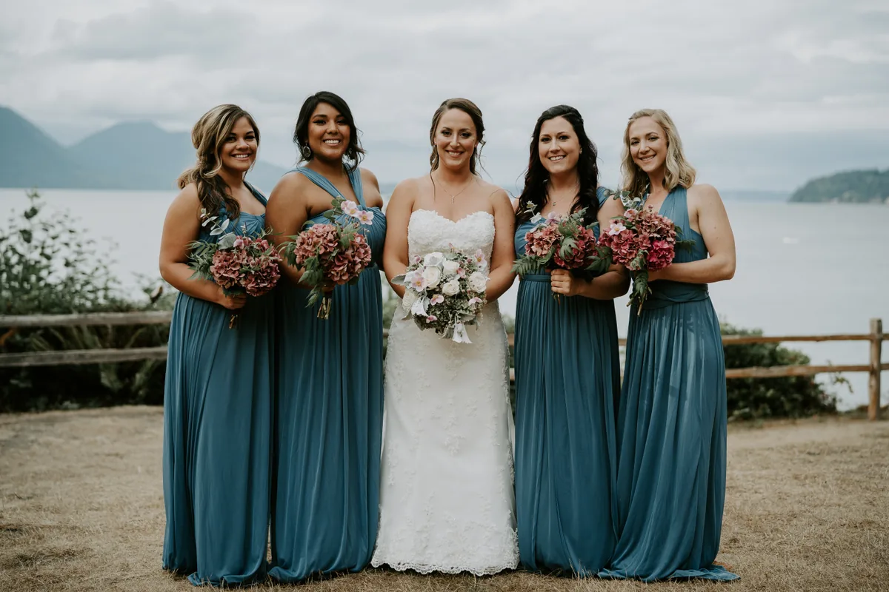

07 / The family
A family photo list
for your wedding day.
Twelve groups to start from, the order to take them in, and the people who keep the list moving.
By Alex Claudio Photography
Family photographs are where a wedding schedule often slips. Someone has gone to the bar, the list is in one person’s head, and thirty relatives are waiting in the sun.
A written list prevents most of that. Twelve groups take twenty to twenty-five minutes, and then you are back with your guests.
Part 1 of 2
Write the list
Start with twelve groups
These twelve cover both families. Change them to fit yours.
- The two of you with the first family: grandparents, parents, and siblings with their partners
- With the first family’s grandparents
- With the first family’s parents and siblings
- With the first family’s parents
- With both sets of parents
- With the second family’s parents
- With the second family’s parents and siblings
- With the second family: grandparents, parents, and siblings with their partners
- With the second family’s grandparents
- With all of your siblings
- One of you with your own parents
- The other with theirs
The order saves time. The first photograph gathers a whole family, so everyone needed for the next three is already standing there. Those grandparents are finished after the second photograph and can sit down. From the fifth photograph the second family’s parents stay in place, and their family joins them a few people at a time.
Allow about two minutes for each group, and more for the two large ones. At that pace eight groups need a quarter of an hour, and twenty need forty minutes, which is most of a cocktail hour.
Write names in place of roles
Write each photograph as a list of first names. “With our parents” leaves questions when parents have separated or remarried. “With Maria and David, then with Sam and Priya” leaves none.
Names also let the list run without you. I can call “Maria, David, Sam” across a lawn. I cannot pick your godmother out of a hundred guests.
Tell me privately about anyone who should not stand side by side, anyone who needs a chair, and anyone who cannot stand for long. Nobody should have to explain a family situation in front of a waiting group.
Leave the wider family for the reception
Keep the list to the photographs you would frame or send to a grandparent. Aunts, uncles, cousins, and groups of friends are easier to photograph at the reception, when they are already together at a table or on the dance floor.
Ask me at any point in the evening and I will take the photograph there and then. It takes a minute, and nobody has waited for it.
If you want one photograph of every guest, plan it for the minute the ceremony ends, before anyone leaves for the bar. Tell me in advance, because I need somewhere to stand above the group.
Part 2 of 2
Run it on the day
Choose the time and the place
If you see each other before the ceremony, take the family photographs then, and give everyone on the list an arrival time. The example timeline puts them at 3 p.m., an hour before the ceremony. If you wait for the aisle, take them straight after the ceremony, while both families are still in one place. First look, or wait for the aisle? compares the two.
Choose a spot a short walk from the ceremony, in open shade, with room for the largest group to stand in two rows. Keep a chair or two beside it for grandparents.
Choose a covered spot as well, in case it is wet. A Seattle wedding rain plan explains what to look for.
Give two people the list
Ask one person from each family to gather the groups, since few people know the faces on both sides. Choose people who are happy to call names across a room and who are in few of the photographs themselves.
Print a copy for each of them and one for me. While I photograph one group, they find the next. I tick each photograph off, so nobody has to remember what is left.
Tell everyone beforehand
A week before the wedding, send the list to everyone on it, with the time and the meeting place. People who know they are needed stay close.
Ask your officiant to say, as the ceremony ends, that family should stay where they are. That is quicker than bringing people back from the bar.
Send me your list once it is drafted. I will tell you how long it needs and where it fits in your timeline.